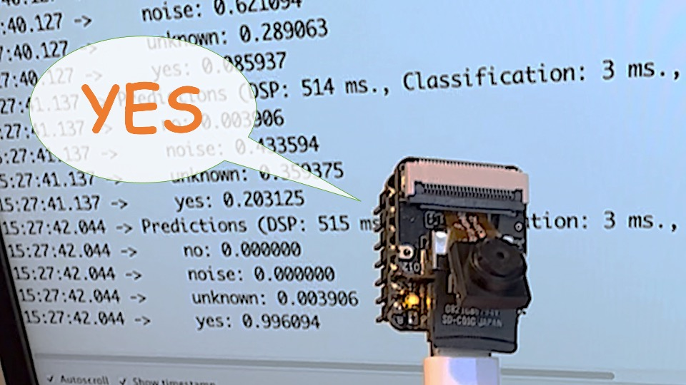

Keyword Spotting (KWS)

Introduzione
Keyword Spotting (KWS) è parte integrante di molti sistemi di riconoscimento vocale, consentendo ai dispositivi di rispondere a parole o frasi specifiche. Sebbene questa tecnologia sia alla base di dispositivi popolari come Google Assistant o Amazon Alexa, è ugualmente applicabile e realizzabile su dispositivi più piccoli e a basso consumo. Questo lab guiderà nell’implementazione di un sistema KWS utilizzando TinyML sulla scheda microcontrollore XIAO ESP32S3.
The XIAO ESP32S3, dotato del chip ESP32-S3 di Espressif, è un microcontrollore compatto e potente che offre un processore Xtensa LX7 dual-core, Wi-Fi integrato e Bluetooth. Il suo equilibrio di potenza di calcolo, efficienza energetica e connettività versatile lo rendono una piattaforma fantastica per le applicazioni TinyML. Inoltre, con la sua scheda di espansione, avremo accesso alla parte “sense” del dispositivo, che ha una fotocamera OV2640 da 1600x1200, uno slot per schede SD e un microfono digitale. Il microfono integrato e la scheda SD saranno essenziali in questo progetto.
Utilizzeremo Edge Impulse Studio, una piattaforma potente e intuitiva che semplifica la creazione e l’implementazione di modelli di apprendimento automatico su dispositivi edge. Addestreremo un modello KWS passo dopo passo, ottimizzandolo e distribuendolo su XIAO ESP32S3 Sense.
Il nostro modello sarà progettato per riconoscere parole chiave che possono attivare il “wake-up” [risveglio] del dispositivo o azioni specifiche (nel caso di “YES”), dando vita a progetti con comandi vocali.
Sfruttando la nostra esperienza con TensorFlow Lite per microcontrollori (il motore “sotto il cofano” di EI Studio), creeremo un sistema KWS in grado di apprendere in tempo reale sul dispositivo.
Procedendo nel lab, analizzeremo ogni fase del processo, dalla raccolta e preparazione dei dati all’addestramento e distribuzione del modello, per fornire una comprensione completa dell’implementazione di un sistema KWS su un microcontrollore.
Come funziona un assistente vocale?
Keyword Spotting (KWS) è fondamentale per molti assistenti vocali, consentendo ai dispositivi di rispondere a parole o frasi specifiche. Per iniziare, è essenziale rendersi conto che gli assistenti vocali sul mercato, come Google Home o Amazon Echo-Dot, reagiscono agli umani solo quando vengono “svegliati” da parole chiave specifiche come “Hey Google” sul primo e “Alexa” sul secondo.

In altre parole, il riconoscimento dei comandi vocali si basa su un modello multi-fase o Cascade Detection.

Fase 1: Un microprocessore più piccolo all’interno dell’Echo Dot o Google Home ascolta continuamente il suono, in attesa che venga individuata la parola chiave. Per tale rilevamento, viene utilizzato un modello TinyML all’edge (applicazione KWS).
Fase 2: Solo quando vengono attivati dall’applicazione KWS nella Fase 1, i dati vengono inviati al cloud ed elaborati su un modello più grande.
Il video qui sotto mostra un esempio in cui si emula un Google Assistant su un Raspberry Pi (Fase 2), con un Arduino Nano 33 BLE come dispositivo tinyML (Fase 1).
Per approfondire il progetto completo, guardare il tutorial: Building an Intelligent Voice Assistant From Scratch.
In questo lab, ci concentreremo sulla Fase 1 (KWS o Keyword Spotting), dove utilizzeremo XIAO ESP2S3 Sense, che ha un microfono digitale per individuare la parola chiave.
Il progetto KWS
Il diagramma seguente darà un’idea di come dovrebbe funzionare l’applicazione KWS finale (durante l’inferenza):

La nostra applicazione KWS riconoscerà quattro classi di suono:
- YES (Keyword 1)
- NO (Keyword 2)
- NOISE [rumore] (nessuna parola chiave pronunciata, è presente solo rumore di fondo)
- UNKNOW (un mix di parole diverse da YES e NO)
Facoltativamente, per progetti reali, si consiglia sempre di includere parole diverse dalle parole chiave, come “Rumore” (o Sfondo) e “Sconosciuto”.
Il Flusso di Lavoro del Machine Learning
Il componente principale dell’applicazione KWS è il suo modello. Quindi, dobbiamo addestrare un modello del genere con le nostre parole chiave specifiche, rumore e altre parole (lo “unknown”):

Il Dataset
Il componente critico del flusso di lavoro di apprendimento automatico è il dataset. Una volta decise le parole chiave specifiche (YES e NO), possiamo sfruttare il dataset sviluppato da Pete Warden, “Speech Commands: A Dataset for Limited-Vocabulary Speech Recognition“. Questo set di dati ha 35 parole chiave (con +1.000 campioni ciascuna), come yes, no, stop e go. In altre parole, possiamo ottenere 1.500 campioni di yes e no.
Si può scaricare una piccola parte del dataset da Edge Studio (Keyword spotting pre-built dataset), che include campioni dalle quattro classi che utilizzeremo in questo progetto: yes, no, noise e background. Per farlo, si seguono i passaggi seguenti:
- Download del dataset delle parole chiave.
- Decomprimere il file in una posizione a scelta.
Sebbene disponiamo di molti dati dal dataset di Pete, è consigliabile raccogliere alcune parole pronunciate da noi. Lavorando con gli accelerometri, creare un dataset con dati acquisiti dallo stesso tipo di sensore era essenziale. Nel caso del suono, è diverso perché ciò che classificheremo sono, in realtà, dati audio.
La differenza fondamentale tra suono e audio è la loro forma di energia. Il suono è energia delle onde meccaniche (onde sonore longitudinali) che si propagano attraverso un mezzo causando variazioni di pressione all’interno del mezzo. L’audio è costituito da energia elettrica (segnali analogici o digitali) che rappresentano il suono elettricamente.
Le onde sonore dovrebbero essere convertite in dati audio quando pronunciamo una parola chiave. La conversione dovrebbe essere eseguita campionando il segnale generato dal microfono a 16 KHz con una profondità di 16 bit.
Quindi, qualsiasi dispositivo in grado di generare dati audio con questa specifica di base (16Khz/16bit) funzionerà bene. Come dispositivo, possiamo usare il XIAO ESP32S3 Sense appropriato, un computer o persino il telefono cellulare.

Acquisizione di Dati Audio online con Edge Impulse e uno smartphone
Nel lab “Motion Classification” e “Anomaly Detection”, colleghiamo il nostro dispositivo direttamente a Edge Impulse Studio per l’acquisizione dei dati (con una frequenza di campionamento da 50 Hz a 100 Hz). Per una frequenza così bassa, potremmo usare la funzione EI CLI Data Forwarder, ma secondo Jan Jongboom, CTO di Edge Impulse, l’audio (16 KHz)* è troppo veloce perché il data forwarder possa essere acquisito. Quindi, una volta che i dati digitali sono stati acquisiti dal microfono, possiamo trasformarli in un file WAV* da inviare a Studio tramite Data Uploader (lo stesso che faremo con il set di dati di Pete).
Se vogliamo raccogliere dati audio direttamente sullo Studio, possiamo usare qualsiasi smartphone connesso online. Non esploreremo questa opzione qui, ma si può facilmente seguire la documentazione EI.
Acquisizione (offline) di dati audio con XIAO ESP32S3 Sense
Il microfono integrato è il MSM261D3526H1CPM, un microfono MEMS con uscita digitale PDM con Multi-mode. Internamente, è collegato all’ESP32S3 tramite un bus I2S utilizzando i pin IO41 (Clock) e IO41 (Data).

Cos’è I2S?
I2S, o Inter-IC Sound, è un protocollo standard per la trasmissione di audio digitale da un dispositivo a un altro. Inizialmente è stato sviluppato da Philips Semiconductor (ora NXP Semiconductors). È comunemente utilizzato in dispositivi audio come processori di segnale digitale, processori audio digitali e, più di recente, microcontrollori con capacità audio digitali (il nostro caso qui).
Il protocollo I2S è composto da almeno tre linee:

1. Linea di clock di bit (o seriale) (BCLK o CLK): Questa linea si attiva/disattiva per indicare l’inizio di un nuovo bit di dati (pin IO42).
2. Linea di “Word select (WS)”: Questa linea si attiva/disattiva per indicare l’inizio di una nuova parola (canale sinistro o canale destro). La frequenza del clock di Word select (WS) definisce la frequenza di campionamento. Nel nostro caso, L/R sul microfono è impostato su massa, il che significa che utilizzeremo solo il canale sinistro (mono).
3. Data line (SD): Questa linea trasporta i dati audio (pin IO41)
In un flusso di dati I2S, i dati vengono inviati come una sequenza di frame, ciascuno contenente una parola del canale sinistro e una parola del canale destro. Ciò rende I2S particolarmente adatto per la trasmissione di dati audio stereo. Tuttavia, può anche essere utilizzato per audio mono o multicanale con linee dati aggiuntive.
Cominciamo a capire come catturare dati grezzi usando il microfono. Su va sul progetto GitHube si scarica lo sketch: XIAOEsp2s3_Mic_Test:
/*
XIAO ESP32S3 Simple Mic Test
*/
#include <I2S.h>
void setup() {
Serial.begin(115200);
while (!Serial) {
}
// start I2S at 16 kHz with 16-bits per sample
I2S.setAllPins(-1, 42, 41, -1, -1);
if (!I2S.begin(PDM_MONO_MODE, 16000, 16)) {
Serial.println("Failed to initialize I2S!");
while (1); // do nothing
}
}
void loop() {
// read a sample
int sample = I2S.read();
if (sample && sample != -1 && sample != 1) {
Serial.println(sample);
}
}Questo codice è un semplice test del microfono per XIAO ESP32S3 che utilizza l’interfaccia I2S (Inter-IC Sound). Imposta l’interfaccia I2S per catturare dati audio a una frequenza di campionamento di 16 kHz con 16 bit per campione e quindi legge continuamente i campioni dal microfono e li stampa sul monitor seriale.
Analizziamo le parti principali del codice:
- Include la libreria I2S: Questa libreria fornisce funzioni per configurare e utilizzare l’interfaccia I2S, che è uno standard per la connessione di dispositivi audio digitali.
- I2S.setAllPins(-1, 42, 41, -1, -1): Imposta i pin I2S. I parametri sono (-1, 42, 41, -1, -1), dove il secondo parametro (42) è il PIN per il clock I2S (CLK) e il terzo parametro (41) è il PIN per la linea dati I2S (DATA). Gli altri parametri sono impostati su -1, il che significa che quei pin non vengono utilizzati.
- I2S.begin(PDM_MONO_MODE, 16000, 16): Inizializza l’interfaccia I2S in modalità mono Pulse Density Modulation (PDM), con una frequenza di campionamento di 16 kHz e 16 bit per campione. Se l’inizializzazione fallisce, viene stampato un messaggio di errore e il programma si arresta.
- int sample = I2S.read(): Legge un campione audio dall’interfaccia I2S.
Se il campione è valido, viene stampato sul monitor seriale e sul plotter.
Di seguito è riportato un test “sussurrato” in due toni diversi.

Salvare campioni audio registrati (dataset) come file audio .wav su una scheda microSD
Utilizziamo il lettore di schede SD integrato per salvare i file audio .wav; dobbiamo prima abilitare la PSRAM XIAO.
ESP32-S3 ha solo poche centinaia di kilobyte di RAM interna sul chip MCU. Potrebbe essere insufficiente per alcuni scopi, quindi ESP32-S3 può utilizzare fino a 16 MB di PSRAM esterna (Psuedostatic RAM) collegata in parallelo con il chip flash SPI. La memoria esterna è incorporata nella mappa di memoria e, con alcune restrizioni, è utilizzabile allo stesso modo della RAM dati interna.
Per iniziare, si inserisce la scheda SD sullo XIAO come mostrato nella foto qui sotto (la scheda SD deve essere formattata in FAT32).

Attivare la funzione PSRAM del chip ESP-32 (Arduino IDE): Tools>PSRAM: “OPI PSRAM”>OPI PSRAM

- Scaricare lo sketch Wav_Record_dataset, che si trova sul GitHub del progetto.
Questo codice registra l’audio usando l’interfaccia I2S della scheda Seeed XIAO ESP32S3 Sense, salva la registrazione come file .wav su una scheda SD e consente il controllo del processo di registrazione tramite comandi inviati dal monitor seriale. Il nome del file audio è personalizzabile (dovrebbe essere le etichette della classe da usare con la formazione) e possono essere effettuate più registrazioni, ciascuna salvata in un nuovo file. Il codice include anche funzionalità per aumentare il volume delle registrazioni.
Analizziamo le parti più essenziali:
#include <I2S.h>
#include "FS.h"
#include "SD.h"
#include "SPI.h"Queste sono le librerie necessarie per il programma. I2S.h consente l’input audio, FS.h fornisce capacità di gestione del file system, SD.h consente al programma di interagire con una scheda SD e SPI.h gestisce la comunicazione SPI con la scheda SD.
#define RECORD_TIME 10
#define SAMPLE_RATE 16000U
#define SAMPLE_BITS 16
#define WAV_HEADER_SIZE 44
#define VOLUME_GAIN 2Qui vengono definite varie costanti per il programma.
- RECORD_TIME specifica la lunghezza della registrazione audio in secondi.
- SAMPLE_RATE e SAMPLE_BITS definiscono la qualità audio della registrazione.
- WAV_HEADER_SIZE specifica la dimensione dell’intestazione del file .wav.
- VOLUME_GAIN viene utilizzato per aumentare il volume della registrazione.
int fileNumber = 1;
String baseFileName;
bool isRecording = false;Queste variabili tengono traccia del numero di file corrente (per creare nomi di file univoci), del nome del file di base e se il sistema sta attualmente registrando.
void setup() {
Serial.begin(115200);
while (!Serial);
I2S.setAllPins(-1, 42, 41, -1, -1);
if (!I2S.begin(PDM_MONO_MODE, SAMPLE_RATE, SAMPLE_BITS)) {
Serial.println("Failed to initialize I2S!");
while (1);
}
if(!SD.begin(21)){
Serial.println("Failed to mount SD Card!");
while (1);
}
Serial.printf("Enter with the label name\n");
}La funzione di configurazione inizializza la comunicazione seriale, l’interfaccia I2S per l’ingresso audio e l’interfaccia della scheda SD. Se l’I2S non si inizializza o la scheda SD non riesce a essere montata, verrà visualizzato un messaggio di errore e l’esecuzione verrà interrotta.
void loop() {
if (Serial.available() > 0) {
String command = Serial.readStringUntil('\n');
command.trim();
if (command == "rec") {
isRecording = true;
} else {
baseFileName = command;
fileNumber = 1; //reset file number each time a new basefile name is set
Serial.printf("Send rec for starting recording label \n");
}
}
if (isRecording && baseFileName != "") {
String fileName = "/" + baseFileName + "." + String(fileNumber) + ".wav";
fileNumber++;
record_wav(fileName);
delay(1000); // delay to avoid recording multiple files at once
isRecording = false;
}
}Nel ciclo principale, il programma attende un comando dal monitor seriale. Se il comando è rec, il programma inizia a registrare. Altrimenti, si presume che il comando sia il nome base per i file .wav. Se sta attualmente registrando e un nome file base è impostato, registra l’audio e lo salva come file .wav. I nomi dei file vengono generati aggiungendo il numero al nome file base.
void record_wav(String fileName)
{
...
File file = SD.open(fileName.c_str(), FILE_WRITE);
...
rec_buffer = (uint8_t *)ps_malloc(record_size);
...
esp_i2s::i2s_read(esp_i2s::I2S_NUM_0,
rec_buffer,
record_size,
&sample_size,
portMAX_DELAY);
...
}Questa funzione registra l’audio e lo salva come file .wav con il nome specificato. Inizia inizializzando le variabili sample_size e record_size. record_size viene calcolato in base alla frequenza di campionamento, alla dimensione e al tempo di registrazione desiderato. Analizziamo le sezioni essenziali;
File file = SD.open(fileName.c_str(), FILE_WRITE);
// Write the header to the WAV file
uint8_t wav_header[WAV_HEADER_SIZE];
generate_wav_header(wav_header, record_size, SAMPLE_RATE);
file.write(wav_header, WAV_HEADER_SIZE);Questa sezione del codice apre il file sulla scheda SD per la scrittura e poi genera l’intestazione del file .wav utilizzando la funzione generate_wav_header. Quindi scrive l’intestazione nel file.
// PSRAM malloc for recording
rec_buffer = (uint8_t *)ps_malloc(record_size);
if (rec_buffer == NULL) {
Serial.printf("malloc failed!\n");
while(1) ;
}
Serial.printf("Buffer: %d bytes\n", ESP.getPsramSize() - ESP.getFreePsram());La funzione ps_malloc alloca memoria nella PSRAM per la registrazione. Se l’allocazione fallisce (ad esempio, rec_buffer è NULL), stampa un messaggio di errore e interrompe l’esecuzione.
// Start recording
esp_i2s::i2s_read(esp_i2s::I2S_NUM_0,
rec_buffer,
record_size,
&sample_size,
portMAX_DELAY);
if (sample_size == 0) {
Serial.printf("Record Failed!\n");
} else {
Serial.printf("Record %d bytes\n", sample_size);
}La funzione i2s_read legge i dati audio dal microfono in rec_buffer. Stampa un messaggio di errore se non vengono letti dati (sample_size è 0).
// Increase volume
for (uint32_t i = 0; i < sample_size; i += SAMPLE_BITS/8) {
(*(uint16_t *)(rec_buffer+i)) <<= VOLUME_GAIN;
}Questa sezione del codice aumenta il volume di registrazione spostando i valori del campione di VOLUME_GAIN.
// Write data to the WAV file
Serial.printf("Writing to the file ...\n");
if (file.write(rec_buffer, record_size) != record_size)
Serial.printf("Write file Failed!\n");
free(rec_buffer);
file.close();
Serial.printf("Recording complete: \n");
Serial.printf("Send rec for a new sample or enter a new label\n\n");Infine, i dati audio vengono scritti nel file .wav. Se l’operazione di scrittura fallisce, viene stampato un messaggio di errore. Dopo la scrittura, la memoria allocata per rec_buffer viene liberata e il file viene chiuso. La funzione termina stampando un messaggio di completamento e chiedendo all’utente di inviare un nuovo comando.
void generate_wav_header(uint8_t *wav_header,
uint32_t wav_size,
uint32_t sample_rate)
{
...
memcpy(wav_header, set_wav_header, sizeof(set_wav_header));
}La funzione generate_wav_header crea un’intestazione di file .wav in base ai parametri (wav_size e sample_rate). Genera un array di byte in base al formato di file .wav, che include campi per la dimensione del file, il formato audio, il numero di canali, la frequenza di campionamento, la frequenza di byte, l’allineamento dei blocchi, i bit per campione e la dimensione dei dati. L’intestazione generata viene poi copiata nell’array wav_header passato alla funzione.
Ora, caricare il codice su XIAO e ottenere campioni dalle parole chiave (yes e no). Si possono anche catturare rumore e altre parole.
Il monitor seriale chiederà di ricevere l’etichetta da registrare.

Invia l’etichetta (ad esempio, yes). Il programma attenderà un altro comando: rec

E il programma inizierà a registrare nuovi campioni ogni volta che viene inviato un comando rec. I file verranno salvati come yes.1.wav, yes.2.wav, yes.3.wav, ecc., finché non verrà inviata una nuova etichetta (ad esempio, no). In questo caso, si deve inviare il comando rec per ogni nuovo campione, che verrà salvato come no.1.wav, no.2.wav, no.3.wav, ecc.

Alla fine, otterremo i file salvati sulla scheda SD.

I file sono pronti per essere caricati su Edge Impulse Studio
App di Acquisizione dei Dati Audio (offline)
In alternativa, si può anche usare il PC o lo smartphone per acquisire dati audio con una frequenza di campionamento di 16 KHz e una profondità di bit di 16 bit. Una buona app per questo è Voice Recorder Pro (IOS). Le registrazioni si devono salvare come file .wav e inviarle al computer.

Notare che qualsiasi app, come Audacity, può essere usata per la registrazione audio o anche il computer.
Modello di training con Edge Impulse Studio
Caricamento dei Dati
Quando il dataset grezzo è definito e raccolto (dataset di Pete + parole chiave registrate), dovremmo avviare un nuovo progetto in Edge Impulse Studio:

Una volta creato il progetto, selezionare lo strumento “Upload Existing Data” nella sezione “Acquisition section”. Si scelgono i file da caricare:

E si caricano nello Studio (si possono dividere automaticamente i dati in train/test). Ripetere per tutte le classi e tutti i dati grezzi.

I campioni appariranno ora nella sezione “Data acquisition”.

Tutti i dati sul dataset di Pete hanno una lunghezza di 1s, ma i campioni registrati nella sezione precedente hanno 10s e devono essere divisi in campioni da 1s per essere compatibili.
Cliccare sui tre punti dopo il nome del campione e selezionare “Split sample”.

Una volta all’interno dello strumento, dividere i dati in record da 1 secondo. Se necessario, aggiungere o rimuovere segmenti:

Questa procedura deve essere ripetuta per tutti i campioni.
Nota: Per file audio più lunghi (minuti), prima si dividono in segmenti da 10 secondi e poi usa di nuovo lo strumento per ottenere le divisioni finali da 1 secondo.
Supponiamo di non dividere automaticamente i dati in train/test durante il caricamento. In tal caso, possiamo farlo manualmente (utilizzando il menù a tre punti, spostando i campioni singolarmente) o utilizzando Perform Train / Test Split su Dashboard - Danger Zone.
Possiamo facoltativamente controllare tutti i dataset utilizzando la scheda Data Explorer.
Creazione di Impulse (Pre-Process / Definizione del Modello)
Un impulse prende dati grezzi, usa l’elaborazione del segnale per estrarre le feature e poi usa un blocco di apprendimento per classificare nuovi dati.

Per prima cosa, prenderemo i dati con una finestra di 1 secondo, aumentando i dati, facendo scorrere quella finestra ogni 500 ms. Notare che è impostata l’opzione Zero-pad data. È essenziale riempire con zeri i campioni inferiori a 1 secondo (in alcuni casi, si è ridotta la finestra di 1000 ms sullo strumento di divisione per evitare rumori e picchi).
Ogni campione audio di 1 secondo dovrebbe essere pre-elaborato e convertito in un’immagine (ad esempio, 13 x 49 x 1). Useremo MFCC, che estrae le caratteristiche dai segnali audio usando Mel Frequency Cepstral Coefficients, che sono ottimi per la voce umana.

Successivamente, selezioniamo KERAS per la classificazione e costruiamo il nostro modello da zero eseguendo la classificazione delle immagini tramite la rete neurale convoluzionale).
Pre-elaborazione (MFCC)
Il passo successivo è creare le immagini da addestrare nella fase successiva:
Possiamo mantenere i valori dei parametri di default o sfruttare l’opzione DSP Autotuneparameters, cosa che faremo.

Il risultato non impiegherà molta memoria per pre-elaborare i dati (solo 16 KB). Tuttavia, il tempo di elaborazione stimato è elevato, 675 ms per un Espressif ESP-EYE (il riferimento più vicino disponibile), con un clock di 240 KHz (lo stesso del nostro dispositivo), ma con una CPU più piccola (XTensa LX6, rispetto alla LX7 sull’ESP32S). Il tempo di inferenza reale dovrebbe essere inferiore.
Supponiamo di dover ridurre il tempo di inferenza in seguito. In tal caso, dovremmo tornare alla fase di pre-elaborazione e, ad esempio, ridurre la lunghezza FFT a 256, modificare il numero di coefficienti o un altro parametro.
Per ora, manteniamo i parametri definiti dallo strumento Autotuning. Salviamo i parametri e generiamo le funzionalità.

Per andare oltre con la conversione di dati seriali temporali in immagini usando FFT, spettrogramma, ecc., si può giocare con questo CoLab: Audio Raw Data Analysis.
Progettazione e Addestramento del Modello
Useremo un modello di Rete Neurale Convoluzionale (CNN). L’architettura di base è definita con due blocchi di Conv1D + MaxPooling (rispettivamente con 8 e 16 neuroni) e un Dropout di 0,25. E sull’ultimo layer, dopo aver appiattito quattro neuroni, uno per ogni classe:

Come iperparametri, avremo un Learning Rate di 0,005 e un modello che verrà addestrato per 100 epoche. Includeremo anche l’aumento dei dati, come un po’ di rumore. Il risultato sembra OK:

Per capire cosa sta succedendo “sotto il cofano”, si può scaricare il dataset ed eseguire un Jupyter Notebook giocando con il codice. Ad esempio, si può analizzare l’accuratezza per ogni epoca:

Questo CoLab Notebook può spiegare come si può andare oltre: KWS Classifier Project - Looking “Under the hood Training/xiao_esp32s3_keyword_spotting_project_nn_classifier.ipynb)”.
Test
Testando il modello con i dati messi da parte prima dell’addestramento (Test Data), abbiamo ottenuto un’accuratezza di circa l’87%.

Esaminando il punteggio F1, possiamo vedere che per YES abbiamo ottenuto 0.95, un risultato eccellente una volta utilizzata questa parola chiave per “attivare” la nostra fase di post-elaborazione (accendere il LED integrato). Anche per NO, abbiamo ottenuto 0,90. Il risultato peggiore è per unknown, che è OK.
Possiamo procedere con il progetto, ma è possibile eseguire Live Classification utilizzando uno smartphone prima della distribuzione sul nostro dispositivo. Si va alla sezione Live Classification e si clicca su Connect a Development board:

Puntare il telefono sul codice a barre e selezionare il link.

Il telefono sarà connesso allo Studio. Selezionare l’opzione Classification sull’app e, quando è in esecuzione, iniziare a testare le parole chiave, confermando che il modello funziona con dati live e reali:

Distribuzione e Inferenza
Studio impacchetterà tutte le librerie necessarie, le funzioni di pre-elaborazione e i modelli addestrati, scaricandoli sul computer. Si deve selezionare l’opzione Arduino Library e, in basso, scegliere Quantized (Int8) e premere il pulsante Build.

Ora è il momento di un vero test. Faremo inferenze completamente scollegate da Studio. Modifichiamo uno degli esempi di codice ESP32 creati quando si distribuisce la libreria Arduino.
Nell’IDE Arduino, si va alla scheda File/Examples, si cerca il progetto e si seleziona esp32/esp32_microphone:

Questo codice è stato creato per il microfono integrato ESP-EYE, che dovrebbe essere adattato al nostro dispositivo.
Iniziare a modificare le librerie per gestire il bus I2S:

Da:
#include <I2S.h>
#define SAMPLE_RATE 16000U
#define SAMPLE_BITS 16Inizializzare il microfono IS2 in setup(), includendo le righe:
void setup()
{
...
I2S.setAllPins(-1, 42, 41, -1, -1);
if (!I2S.begin(PDM_MONO_MODE, SAMPLE_RATE, SAMPLE_BITS)) {
Serial.println("Failed to initialize I2S!");
while (1) ;
...
}Nella funzione static void capture_samples(void* arg), sostituire la riga 153 che legge i dati dal microfono I2S:

Da:
/* read data at once from i2s */
esp_i2s::i2s_read(esp_i2s::I2S_NUM_0,
(void*)sampleBuffer,
i2s_bytes_to_read,
&bytes_read, 100);Nella funzione static bool microphone_inference_start(uint32_t n_samples), dovremmo commentare o eliminare le righe da 198 a 200, dove viene chiamata la funzione di inizializzazione del microfono. Ciò non è necessario perché il microfono I2S è già stato inizializzato durante setup().

Infine, nella funzione static void microphone_inference_end(void), sostituire la riga 243:

Da:
static void microphone_inference_end(void)
{
free(sampleBuffer);
ei_free(inference.buffer);
}Il codice completo si trova tra i progetti GitHub. Caricare lo sketch sulla bacheca e provare alcune inferenze reali:

Post-elaborazione
Ora che sappiamo che il modello funziona rilevando le nostre parole chiave, modifichiamo il codice per vedere il LED interno accendersi ogni volta che viene rilevato uno YES.
Si deve inizializzare il LED:
#define LED_BUILT_IN 21
...
void setup()
{
...
pinMode(LED_BUILT_IN, OUTPUT); // Set the pin as output
digitalWrite(LED_BUILT_IN, HIGH); //Turn off
...
}E modifica la parte “// print the predictions” del codice precedente (su loop():
int pred_index = 0; // Initialize pred_index
float pred_value = 0; // Initialize pred_value
// print the predictions
ei_printf("Predictions ");
ei_printf("(DSP: %d ms., Classification: %d ms., Anomaly: %d ms.)",
result.timing.dsp, result.timing.classification, result.timing.anomaly);
ei_printf(": \n");
for (size_t ix = 0; ix < EI_CLASSIFIER_LABEL_COUNT; ix++) {
ei_printf(" %s: ", result.classification[ix].label);
ei_printf_float(result.classification[ix].value);
ei_printf("\n");
if (result.classification[ix].value > pred_value){
pred_index = ix;
pred_value = result.classification[ix].value;
}
}
// show the inference result on LED
if (pred_index == 3){
digitalWrite(LED_BUILT_IN, LOW); //Turn on
}
else{
digitalWrite(LED_BUILT_IN, HIGH); //Turn off
}Il codice completo si trova sul GitHub del progetto. Caricare lo sketch sulla scheda e provare alcune inferenze reali:

L’idea è che il LED sarà ACCESO ogni volta che viene rilevata la parola chiave YES. Allo stesso modo, invece di accendere un LED, questo potrebbe essere un “trigger” per un dispositivo esterno, come abbiamo visto nell’introduzione.
Conclusione
The Seeed XIAO ESP32S3 Sense è un tiny device gigante! Tuttavia, è potente, affidabile, non costoso, a basso consumo e ha sensori adatti per essere utilizzato nelle applicazioni di apprendimento automatico embedded più comuni come visione e suono. Anche se Edge Impulse non supporta ufficialmente XIAO ESP32S3 Sense (ancora!), ci siamo resi conto che utilizzare Studio per la formazione e l’implementazione è semplice.
Nel repository GitHub, si trova l’ultima versione di tutto il codice utilizzato in questo progetto e nei precedenti della serie XIAO ESP32S3.
Prima di concludere, considerare che la classificazione dei suoni è più di una semplice voce. Ad esempio, si possono sviluppare progetti TinyML sul suono in diverse aree, come:
- Sicurezza (Rilevamento vetri rotti)
- Industria (Rilevamento di Anomalie)
- Medicina (Russare, Tosse, Malattie polmonari)
- Natura (Controllo alveari, suono degli insetti)